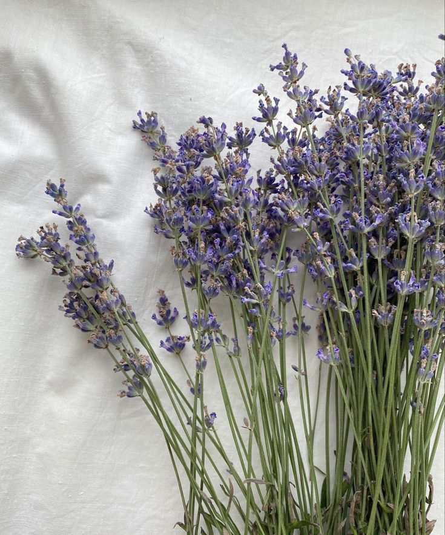

Lavandas são flores famosas por seus aromas marcantes, que trazem um perfume naturalmente suave ao ambiente.
qSão flores lindas e cheirosas, perfeitas para enfeitar os lugares.
cuidados da lavanda no vasoAlém de sua beleza impressionante, para se ter esta flor precisa também de ter um bom cuidado, em um ambiente ensolarado, seco e com o solo bem drenado, sendo assim uma boa escolha para quem quer um ambiente exotico. 